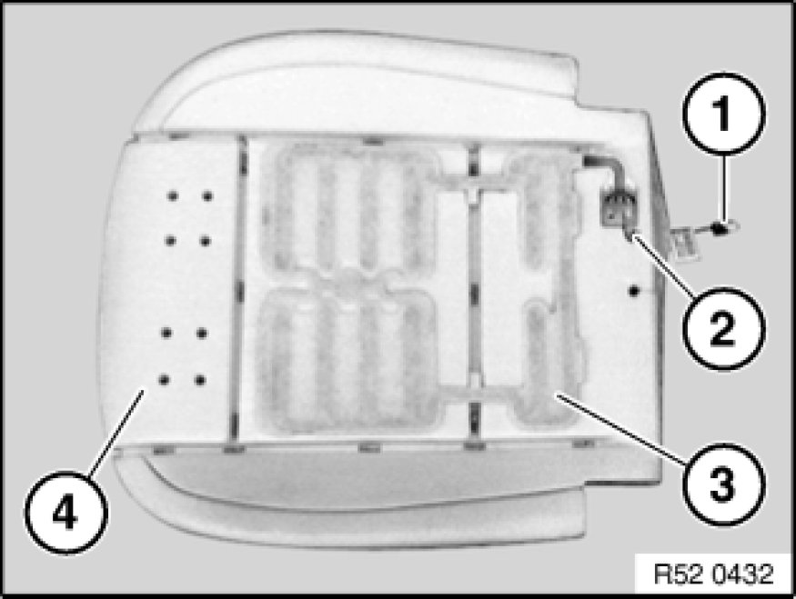

Replacing Seat Cover on Left or Right Front Seat (Normal/Manual)
52 13 400 - Replacing seat cover on left or right front seat (normal/manual)

Special tools required:
- 52 0 050 52 0 050 Pliers

Necessary preliminary tasks:
- Remove inner cover Removing and Installing/Replacing Inner Cover on Left or Right Front Seat Backrest (Normal/Manual)
- Remove cover (normal/electric) Removing and Installing/Replacing Outer Covers on Left or Right Front Seat (Sports/Electric) or
outer actuating unit Removing and Installing/Replacing Controls on Left/Right Front Seat (Normal/Manual)
- Remove backrest frame with cover and padding

Warning!
US/CDN front passenger seat (with OC3 mat) only:
To avoid damaging the OC3 mat, it is essential to carry out the following operations with extra care.
When replacing seat cover:
If seat cover is defective, seat cover and padding with OC3 mat must be replaced together.
New seat cover is supplied with padding, OC3 mat and if necessary seat heating.
When replacing padding or OC3 mat:
If OC3 mat or padding is defective, both parts must be replaced together.
These must be fitted with the seat cover from the car.

Important!
The OC3 mat must be enabled after each installation operation.
Enabling seat occupancy detector (OC3 mat):
- Connect BMW diagnosis system
- Release seat occupancy detector
- Clear fault memory if necessary

Only when replacing OC3 mat with padding:
OC3 mat (1) is secured on the left and right sides in the marked area with a longitudinal trim wire for transportation.
Carefully remove adhesive tape (2).

Removing transportation lock:
Carefully release retainers in marked area on left and right from longitudinal trim wires (1).
Important!
Remove all remainders of retainers from padding and OC3 mat.
Seat with electric actuating unit only:
Release screws (1).
Pull trim (2) out a little and release screw (3).
Release clip (5) from carrier (4).
Remove trim (2) and carrier (4).
Installation:
Cable holders (1) on carrier (2) must not be damaged.
Detach seat cover (1) from seat frame (2).

Version with seat occupancy detector:
If necessary, disconnect plug connection (1) from control unit (2).
Version with seat heating:
If necessary, lever catch (1) towards top and detach cover (2).
Disconnect plug connection (1) from seat heating.
Disconnect plug connection (1) from seat heating.
Expose cable (2).
Release retainers (1) on left/right.
Pull out cover tabs (2) on left/right.

Pull out cover welt (1) completely from seat frame (2).
Installation:
Begin assembly in middle.
Cover piping (1) and seat frame (2) have markings for middle position.
Fold in tongues (1) on seat cover and push through under backrest (2) towards front.
Model without seat heating and without seat occupancy detector:
Remove seat cover (1) towards front/top.
Version with seat heater and/or with seat occupancy detector:
Pull seat cover (1) forward a little and feed cable (2) out.
Remove seat cover (1) towards front/top.
Installation:
The padding is coated with wax to prevent grinding noises.
Do not remove wax (1) on seat pan (2).
Note:
The operation "Removing complete seat cushion" ends here.

Replacing support:
Detach retainers (1) at rear left/right from support (2).
Detach all retainers in side area from longitudinal wires (1).
Pull trim wires (1) forward out of seat cover.
Carefully fold back seat cover and release retainers from cross-wires (2).
Remove seat cover from padding.
Important!
Remove all remnants of clips from seat cover and padding.
Installation:
Bend new clips (2) with special tool 52 0 050 52 0 050 Pliers.
1. Padding
2. Retainer
3. Trim wire in padding
4. Trim wire in cover
5. Seat cover
Installation:
The padding is coated with wax to prevent grinding noises.
Do not remove wax (1) on padding (2).
Passenger seat only (replacing padding):
Installation:
In order to guarantee the function and fastening (adhesive strength) at the sticking surfaces of sensor mat (1), the foam most not show any traces of damage!
Replace the foam if it is hardened or damaged particularly in the area of the sticking surfaces.
Fit new sensor mat (1) for passenger seat occupancy detector.
Align new sensor mat (1) on foam (2).
Feed plug (3) through bore hole (4).
Passenger seat only (replacing sensor mat):
Passenger seat only (replacing padding):
Installation Note:
Detach liner (1) at individual points and stick sensor mat (2) onto foam (3).

Note:
The work for "Replacing support" ends here.

Passenger seat only (replacing sensor mat):
Pull plug (1) out of bore hole (2).
In order to guarantee the function and fastening (adhesive strength) at the sticking surfaces of sensor mat (3), the foam most not show any traces of damage at all!
Replace the foam if it is hardened or damaged particularly in the area of the sticking surfaces.
Cut sticking surfaces on sensor mat (3) with cutter knife or razor blade from foam without damaging the foam.
Carefully remove sensor mat (3) from support (4).
Note:
The operation "Replacing sensor mat" ends here.
Replacing seat cover:
Remove trim threads (1) from seat cover (2).
Cut new seat cover (2) to size and insert trim threads (1).
Cable (3) for seat heating.